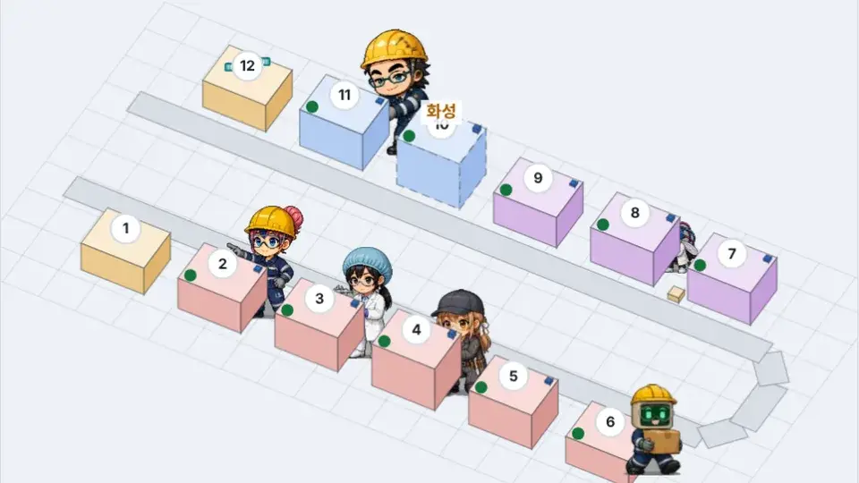

실측 직물 데이터의 패턴(결합분포)을 학습하는 생성 모델로 새 직물을 만들고,
그 직물의 전기적 특성을 연속값(회귀형 출력)으로 예측한다.
섬유 → 실 → 직물 구조 → 물성 19항목 → 전기 특성 Y. 소재와 제작 방법(제직·편직·부직)의 메커니즘을 식으로 따라가 모의 데이터를 만드는 방법과 근거 이론.
측정값을 정답이 아닌 관측값으로 다루는 법. 품질 검사, 반복 측정 흔들림, 분포·상관 비교, 누수 방지, TSTR, 적용 범위.
생성된 데이터로 생성 모델을 학습하고 검증하는 7개 Lab. 실행 명령, 확인할 숫자, CSV 예시 파일 14개를 함께 드립니다.
섬유공학 전문가가 아닌 데이터·AI 쪽에서 쓴 자료입니다. 섬유 메커니즘 부분은 고전 이론과 문헌 방향을 따른 가정이며, 실험실의 검토와 보정을 전제로 합니다.
그래서 실측이 모이는 동안 메커니즘으로 만든 모의 데이터로 도구·모델·검증 절차를 먼저 시험해 둡니다.
직물 특성 19항목 + 전기 특성(전압·전류·전하밀도)을 함께 계측. 전기 특성은 엄격한 정답이 아니라 직물 특성 중 하나
비지도 — 생성 모델이 "어떤 직물 특성이 어떤 전기 특성과 함께 나타나는가"를 배움
새 직물 + 전기 특성의 연속값과 범위. 지도 회귀는 비교 기준
생성 직물 일부를 실제로 만들어 측정 오차 범위 안에서 맞는지 확인
학습 방식(지도·비지도)과 출력 종류(연속·이산)는 서로 다른 구분입니다. 이 과제는 학습은 비지도, 출력은 연속값입니다.
is_mock표의 한 줄이 원단 하나입니다. 열은 실측 엑셀의 공통 19항목과 같은 이름을 씁니다.
| fabric_id | 소재 | 구조 | W | SFC_F | SRA_F | BAR_F | CW_F | Qmax_F | … | Voc_V | Voc_cv |
|---|---|---|---|---|---|---|---|---|---|---|---|
| M0001 | 면 | 평직 | 158 | 0.291 | 24.5 | 10.31 | 0.188 | 0.103 | … | 42.9 | 0.158 |
| M0002 | 면 | 평직 | 124 | 0.300 | 17.8 | 7.82 | 0.152 | 0.105 | … | 24.0 | 0.159 |
| M0004 | 면 | 평직 | 221 | 0.347 | 31.6 | 15.58 | 0.226 | 0.100 | … | 44.0 | 0.034 |
| M0005 | 면 | 평직 | 161 | 0.323 | 31.2 | 10.50 | 0.232 | 0.086 | … | 44.5 | 0.120 |
소재, 구조, 실 선밀도, 밀도(커버 팩터·루프 길이·고형률) — 실험실이 정하는 값
평량, 마찰, 거칠기 진폭·파장, 굽힘 강성·일, 압축 일·회복, 냉온감 — FTT로 재는 값
개방 전압 Voc, 전하 Q, 평균 전류 — 반복 3회 평균과 변동계수
실험실은 이 양식(00_measurement_template.csv)으로 기록합니다. 열 뜻과 단위는 00_column_dictionary.csv.
| fabric_id | material | structure | W | SRA_F | counter | rh_pct | Voc_rep1~3 | Voc_V | Voc_cv |
|---|---|---|---|---|---|---|---|---|---|
| L_WP12 | polyester | plain | 118 | 22.1 | PTFE film | 64.8 | 18.2 · 16.9 · 19.5 | 18.2 | 0.071 |
| L_TW03 | nylon | twill22 | 148 | 49.0 | PTFE film | 65.2 | 96.0 · 108.3 · 101.2 | 101.8 | 0.061 |
| L_KN07 | wool | jersey | 133 | 27.5 | PTFE film | 65.5 | 61.0 · 74.2 · 68.9 | 68.0 | 0.098 |
| 측정 조건 (고정) | 값 | 왜 고정하나 |
|---|---|---|
| 접촉 방식 · 상대 전극 | 접촉-분리 · PTFE 필름 | 대전량은 상대 물질에 따라 부호와 크기가 바뀜M1,G8 |
| 간격 x · 전극 면적 S | 1.0 mm · 25.0 cm² | Voc ∝ x, Q ∝ SM2 |
| 누르는 압력 · 주파수 | 5.0 kPa · 2.0 Hz | 출력은 실접촉 면적을 따라 압력에 따라 늘다 포화G11 |
| 상대습도 | 65 ± 2 % (ISO 139 표준 상태) | 습도가 높으면 대전량 감소G9,M5 |
| 반복 측정 | 3회 평균 + 변동계수 | Y는 엄격한 정답이 아닌 관측값 — 오차 범위를 함께 기록 |
조건이 흔들리면 모델은 직물이 아니라 측정 조건을 배웁니다. 고정할 수 없는 온습도는 반드시 열로 남깁니다.
각 칸은 앞 칸의 값으로 계산합니다. 무작위로 흩뿌린 숫자가 아니라 제작 메커니즘을 따라간 숫자입니다.
식이 다 설명하지 못하는 몫(원단 간 변동)과 측정 오차를 칸마다 정한 크기로 더합니다.
대전 서열과 수분율은 구조를 거치지 않고 전기 특성에 바로 영향을 줍니다.
| 소재 | 밀도 g/cm³ | 표준 수분율 % | 섬유 탄성률 GPa | 섬유 지름 μm | 회복 경향 | 기준 마찰계수 | 열 전달 계수 | 대전 서열 점수 |
|---|---|---|---|---|---|---|---|---|
| 면 | 1.52 | 8.5 | 8.0 | 15 | 0.45 | 0.3 | 1.0 | +0.20 |
| 폴리에스터 | 1.38 | 0.4 | 10.0 | 13 | 0.65 | 0.25 | 0.8 | -0.50 |
| 나일론 | 1.14 | 4.5 | 3.0 | 14 | 0.8 | 0.28 | 0.85 | +0.80 |
| 울 | 1.31 | 16.0 | 3.0 | 20 | 0.85 | 0.35 | 0.75 | +0.50 |
| 폴리프로필렌 | 0.91 | 0.05 | 4.0 | 18 | 0.75 | 0.22 | 0.7 | -0.80 |
| 상대 전극 | 측정 프로토콜에서 고정: PTFE 필름 | -1.00 | ||||||
교과서 수준의 대표값입니다. 대전 서열 점수는 직물 대전 서열(나일론 > 면 > 폴리에스터 > 폴리프로필렌 > PTFE)G8을 순서 점수로 옮긴 가정값이며, 울은 문헌마다 위치가 달라 불확실성이 큽니다. 실험실 실의 시험 성적서 값으로 바꿔 넣습니다.
| 구조 | 방식 | 제작 메커니즘 | 밀도를 정하는 인자 (생성 범위) | 표면 요철 주기 | 실-실 접촉 표면 계수 |
|---|---|---|---|---|---|
| 평직 | 제직 | 경·위사가 한 올씩 교차, 교차가 가장 많음 | 커버 팩터 합 20~28 (막힘 한계 32) | 실 간격 × 1 | 1.00 |
| 능직 2/2 | 제직 | 두 올씩 건너뛰며 사선 — 뜬 실이 길다 | 22~32 (막힘 한계 36) | 실 간격 × 2 | 1.25 |
| 호프색 2/2 | 제직 | 두 올을 한 묶음으로 평직처럼 | 22~32 (막힘 한계 36) | 실 간격 × 2 | 1.30 |
| 싱글 저지 | 편직 | 실 고리를 한 방향으로 엮음, 앞뒤가 다름 | 조임 계수 TF = √tex ÷ 루프 길이(mm), 1.2~1.7 | 웨일 간격 | 1.15 |
| 니들펀치 부직포 | 부직 | 실 없이 섬유망을 바늘로 얽음 | 평량 40~200 g/m², 고형률 0.06~0.20 | 섬유망 요철 | 0.90 |
능직·호프색은 교차가 적어 평직보다 실을 더 촘촘히 넣을 수 있어(조직 계수)G2 막힘 한계를 높게 둡니다. 실-실 접촉 표면 계수는 직물 TENG 비교 연구M3,M4의 순서를 따른 가정입니다.
Peirce(1937)는 제직물을 실 지름·간격·굴곡·커버·두께·평량이 서로 묶인 하나의 기하 체계로 다뤘습니다G1. 생성기는 이를 단순화해 씁니다.
코스·웨일 밀도는 루프 길이에 반비례하고, 상수는 조임과 무관합니다G3. Kc ≈ 4.8~5.4, Kw ≈ 3.8~4.3 (건조 이완 대표값).
| 항목 | 메커니즘 | 생성 식 (요약) | 근거 |
|---|---|---|---|
| W 평량 | 실 질량의 합 (굴곡만큼 실이 더 들어감) | 제직 (EPC·tex·(1+c₁) + PPC·tex·(1+c₂)) / 10 편직 S·l·tex / 10, 부직 설계값 | G1,G3 |
| SRA 거칠기 진폭 앞·뒤 | 실 지름 × 뜬 길이 효과, 밀도가 막힘에 가까울수록 평평 | 0.18·d·(1+0.6(float−1))·(1−0.35·K/K_jam), 능직 앞면 +15% / 편직 뒷면 ×1.3 | G1,G2 |
| SRW 거칠기 파장 앞·뒤 | 표면 요철의 반복 주기 | 실 간격 × 뜬 길이 (편직: 웨일 간격) | G1,G3 |
| SFC 마찰계수 앞·뒤 | Howell형 마찰 F = a·Nⁿ, 요철이 클수록 맞물림 증가 | μ = μ₀(소재) · (1 + 0.25·ln(SRA/20)) | G6,G7 |
| BAR 굽힘 강성 앞·뒤 | 섬유 탄성률 × 섬유 단면 관성 합 × 폭당 실 수, 교차가 적으면 유연 | ∝ E · tex · (d_f/15)² · 밀도, 뜬 실 구조 ×0.8, 편직 ×0.45 | G1,G7 |
| 항목 | 메커니즘 | 생성 식 (요약) | 근거 |
|---|---|---|---|
| BW 굽힘 일 (앞·뒤 × L·C) | 방향별 굽힘 강성 × 굽힘 범위 | 경사(L)·위사(C) 밀도 비, 편직 웨일 방향 ×1.5, 부직 MD/CD 1.3 | G7 |
| CW 압축 일 앞·뒤 | van Wyk 계열: 공극이 많고 섬유가 유연할수록 압축 일 큼 | 0.9 · t · (1−φ)² · (10/(E+2))^0.3, φ = 평량 / (두께·밀도·1000) | G4,G5 |
| CRR 압축 회복률 앞·뒤 | 섬유 회복성(울·나일론 큼, 면 작음) × 구조(편직 > 제직 > 부직) | 100 · (0.25 + 0.55·회복 경향) · 구조 계수 | G4,G7 |
| Qmax 접촉 냉온감 앞·뒤 | 충전율·열 전달이 클수록, 거칠수록(접촉 면적 작음) 작음, 수분율이 크면 약간 큼 | 0.18 · k_th · √φ · (1 − 0.25·log₁₀(SRA/10)) · (1 + 0.02·수분율) | G7 |
섬유·직물 마찰은 Amontons 법칙(F/N = 일정)이 맞지 않고 F = a·Nⁿ을 따릅니다G6. 압축은 van Wyk 섬유 집합체 이론G4,G5의 방향을 따랐습니다. 단위는 FTT 출력 단위로 보정합니다.
접촉-분리형 TENG의 V–Q–x 이론M2. σ₀(규모)는 실측 첫 원단 10개 안팎으로 보정합니다.
꼭짓점 SRAopt를 움직여 보십시오. 점은 구조별 거칠기 중앙값(모의)입니다. 실측 원단으로 꼭짓점을 정합니다.
소재·구조·인자를 바꾸면 구조 → 물성 → 전기 특성이 같은 식으로 계산됩니다(잡음 없는 참값). 생성기 파이썬 코드와 값이 일치합니다.

가로: 실 선밀도, 세로: 커버 팩터. 왼쪽 무작위, 오른쪽 라틴 하이퍼큐브(각 행·열에 점 하나).
| 구조 | 버리는 조건 |
|---|---|
| 제직 | 커버 팩터 합 > 막힘 한계 × 0.98 |
| 편직 | 조임 계수 TF < 1.15 또는 > 1.75 |
| 부직 | 충전율 φ < 0.03 또는 > 0.30 |
실험실이 실제로 만들 수 없는 직물이 데이터에 들어가지 않게 합니다.
| 층 | 크기 | 뜻 |
|---|---|---|
| 원단 간 변동 | CV 6% | 같은 설계라도 실·가공 차이 |
| 물성 측정 | CV 4% × 3회 평균 | FTT 반복의 흔들림 |
| 전기 측정 | CV 12% × 3회 평균 | 표면 상태·잔류 전하에 민감 |
| 측정 환경 | RH 65 ± 2% | 습도 계수로 Y에 들어감 |
층을 나눠 두면 "모델 오차가 측정 오차 수준까지 내려왔는가"를 판단할 수 있습니다.
cd analysis/mock_data python generate_mock_fabric.py 20 20261118 . # 칸당 20개 × 소재 5 × 구조 5 # → mock_fabric_data.csv (500행) # → mock_fabric_dictionary.json
| 열 묶음 | 열 |
|---|---|
| 식별 | fabric_id, material, structure, kind, is_mock |
| 설계 인자 | tex, cover, warp_share, tf, gsm_design, solidity |
| 구조량 | yarn_d_mm, thick_mm, phi, epc, ppc, cpc, wpc, loop_mm |
| 환경 | rh |
| 물성 19 | W, SFC_F … Qmax_B |
| 전기 특성 | Voc_V, Voc_cv, Qsc_nC, Iavg_nA, sigma_uCm2 |
| 진단 | contact_index, hum_factor |
| Voc 중앙값 (V, 모의) | 평직 | 능직 2/2 | 호프색 2/2 | 싱글 저지(편직) | 니들펀치 부직포 |
|---|---|---|---|---|---|
| 나일론 | 73.8 | 101.8 | 104.0 | 90.8 | 84.4 |
| 울 | 54.1 | 75.9 | 78.7 | 72.3 | 50.3 |
| 면 | 43.5 | 64.1 | 64.5 | 56.6 | 51.1 |
| 폴리에스터 | 17.5 | 29.1 | 29.6 | 24.5 | 22.4 |
| 폴리프로필렌 | 9.1 | 10.6 | 11.5 | 10.6 | 8.6 |
보정한 생성기는 버리지 않습니다. 생성 모델(S4)과 비교하는 물리 기반 기준선이 됩니다.
결측·음수·튀는 값·범위·중복·반복 흔들림 — Lab 1
구조·소재 순서, 분포·상관 비교, 간접 상관 함정 — Lab 2, 5
누수 없는 분할, TSTR, 적용 범위, 전향 검증 — Lab 3, 5, 6
| 검사 | 기준 |
|---|---|
| 필수 열 | 19항목 + Voc_V 모두 |
| 결측 · 양수 | 결측 0, 0 이하 0 (로그 변환 전제) |
| 튀는 값 | 로그 z 점수 |z| > 4 인 원단 0개 |
| 범위 | 평량 30~400 g/m² 등 실제 직물 범위 |
| 반복 흔들림 | Voc CV 중앙값 ≤ 0.15, 초과 원단은 재측정 |
| 중복 | fabric_id 중복 0 |
| 검사 | 통과 | 경고 |
|---|---|---|
| 결측 | 20 | 0 |
| 모의 표시 | 1 | 0 |
| 반복 흔들림 | 1 | 0 |
| 범위 | 2 | 0 |
| 양수 | 20 | 0 |
| 재측정 대상 | 1 | 0 |
| 중복 | 1 | 0 |
| 튀는 값 | 19 | 1 |
| 필수 열 | 1 | 0 |
학습 자료(모의 384개) 결과: 통과 66 · 경고 1 — 압축 일 CW_B에서 |z| > 4 원단 2개. 반복 흔들림은 CV 중앙값 0.10으로 통과했지만, CV 0.15를 넘는 원단 78개가 재측정 목록 lab1_remeasure.csv로 나옵니다. 예시: 03_qc_report_example.csv
| 항목 | KS 거리 | p | 판정 |
|---|---|---|---|
| 0.062 | 0.22 | 닮음 | |
| 0.029 | 0.97 | 닮음 | |
| 0.035 | 0.86 | 닮음 | |
| 0.053 | 0.41 | 닮음 | |
| 0.062 | 0.23 | 닮음 | |
| 0.038 | 0.81 | 닮음 | |
| 0.037 | 0.83 | 닮음 | |
| 0.022 | 1.00 | 닮음 | |
| 0.061 | 0.24 | 닮음 |
생성 1000개로 학습해도 실측 384개 학습을 넘지 못합니다. 생성은 실측을 대신하지 못하고, 패턴을 확인·탐색하는 데 씁니다.
| 지도학습 | 비지도학습 | |
|---|---|---|
| 배우는 것 | 목표 열 Y를 따로 두고 X → Y | 자료 전체의 패턴(분포) |
| 출력이 연속 | 회귀 | 연속값을 내는 생성 모델 |
| 출력이 이산 | 분류 | 군집 |
| 이 과제 | 비교 기준 (릿지·RF·GP) | 주 방법 (결합분포 생성 모델) |
| 방법 | 배우는 법 | 원단 수 | 이 과제에서 |
|---|---|---|---|
| 가우시안 혼합 | 무리별 평균·공분산 | 수십 개부터 | 1차 시작점 — 조건부 식이 정확, 해석 쉬움 |
| 가우시안 코퓰라 | 열별 분포 + 상관 구조 | 수십 개부터 | 분포가 치우친 항목이 많을 때 |
| VAE (TVAE) | 인코더로 잠재 공간 → 디코더로 복원 | 수백 개 이상 | 원단이 늘고 관계가 비선형일 때 |
| CTGAN | 생성기 vs 판별기 경쟁, 범주 조건 | 수백 개 이상 | 소재·구조 같은 범주를 조건으로 줄 때M10 |
표 데이터 생성 모델 논문도 일부 지표에서 단순한 방법보다 못하다고 밝힙니다M10. 원단이 적을 때 딥러닝 생성 모델은 원단을 외웁니다.
practice/ ├─ README.md 상세 지침 ├─ requirements.txt numpy pandas scikit-learn scipy matplotlib ├─ data/ CSV 14개 ├─ labs/ │ common.py 경로·열 목록·변환·조건부 계산 │ lab0_make_splits.py (강사용) 자료 나누기 │ lab1_check_data.py 품질 검사 │ lab2_explore_pca.py PCA │ lab3_baseline_regression.py │ lab4_generative_model.py │ lab5_validate_generated.py │ lab6_select_and_verify.py │ lab7_inverse_design.py └─ outputs/ 실행 결과
| 파일 (클릭하면 내려받기) | 내용 |
|---|---|
| 00_measurement_template.csv | 실측 기록 양식 52열 + 예시 3행 |
| 00_column_dictionary.csv | 열 뜻·단위·필수 여부 |
| 01_mock_full.csv | 모의 원단 500개 |
| 02_train.csv | 학습 384개 |
| 02_test.csv | 시험 96개 |
| 02_test_new_combo.csv | 새 조합 시험 20개 (울 × 호프색) |
| 03_qc_report_example.csv | Lab 1 결과 |
| 04_generated_candidates_example.csv | Lab 4 — 새 직물 1000개, 예측·범위·적용 범위 |
| 05_baseline_scores_example.csv | Lab 3 — 비교 기준 성적 |
| 05_ks_example.csv | Lab 5 — 분포 비교 |
| 05_tstr_result_example.csv | Lab 5 — TSTR |
| 06_verification_plan_example.csv | Lab 6 — 만들 후보와 측정 칸 |
| 07_verification_result_example.csv | Lab 6 — 측정 후 판정 |
| 08_inverse_candidates_example.csv | Lab 7 — 역방향 후보 |
cd practice python -m venv .venv source .venv/bin/activate # Windows: .venv\Scripts\activate pip install -r requirements.txt cd labs python lab1_check_data.py
Python 3.10 이상. 결과는 practice/outputs/ 에, 같은 결과의 예시는 practice/data/ 에 미리 있음.
$ python lab1_check_data.py # 기본 02_train.csv $ python lab1_check_data.py 실측.csv # 실측이 오면 저장: outputs/lab1_remeasure.csv (78행) 저장: outputs/lab1_qc_report.csv (67행) 통과 66 경고 1
00_measurement_template.csv 열 이름 그대로$ python lab2_explore_pca.py 설명 비율 PC1 0.355 PC2 0.322 PC3 0.111 W 열 길이 [1. 1. 1.] PC1·PC2 내적 0.0 저장: lab2_pca_loadings.csv (19×3) 저장: lab2_pca_scores.csv, lab2_pca.png
$ python lab3_baseline_regression.py 평균(기준선) CV R² -0.151 시험 R² -0.028 새 조합 41.8 V 릿지 CV R² 0.757 시험 R² 0.829 새 조합 18.8 V 랜덤포레스트 CV R² 0.820 시험 R² 0.920 새 조합 10.1 V 가우시안 과정 CV R² 0.916 시험 R² 0.944 새 조합 10.3 V 측정 오차 수준: Voc 반복 CV 중앙값 0.1
$ python lab4_generative_model.py
BIC로 고른 무리 수: 4
적용 범위 안 생성 직물: 837 / 1000
(Y 학습 범위 4.6~126.8 V)
저장: lab4_bic.csv, lab4_generated_candidates.csv
Voc_sampled Voc_pred
median 46.7 45.9
max 257.7 240.0 ← 외삽$ python lab5_validate_generated.py KS 9항목 모두 < 0.1 (닮음) 상관 차이 최대 0.058 평균 0.021 TRTR R² 0.913 RMSE 9.5 TSTR R² 0.818 RMSE 13.7 실측+생성 R² 0.897 RMSE 10.3
분포·상관은 닮았지만 TSTR < TRTR, 실측+생성도 나아지지 않음 → 생성은 새 정보를 주지 않음
$ python lab6_select_and_verify.py 기대값 최고 3 → ✓✓✓ 예상 범위 최대 3 → ✓✗✗ (함정) 범위 검사 없음 3 → ✗✗✗ 적용 범위 안 비율 0.67 함정 0.0
측정값은 예시. 06_verification_plan의 measured_Voc 칸을 실험실 값으로 채우고 다시 실행
$ python lab7_inverse_design.py 90 목표 Voc* = 90 V 무리 가중치 [0.81 0.10 0 0.09] 후보 40개 → 닮은 원단: 나일론 호프색·저지 울 저지·능직
p(x | y*)에서 뽑은 직물을 실험실이 만들 수 있는지 검토 → 만들 후보 목록
각 Lab 결과 CSV는 practice/outputs/ 에 쓰이고, 같은 내용의 예시가 practice/data/ 에 있어 실행 전에도 열어 볼 수 있습니다.
| 후보 | 고른 이유 | 예측 | 95% 범위 | 측정 | 판정 |
|---|---|---|---|---|---|
| G0043 | 기대값 최고 | 126 | 99~161 | 111 | ✓ |
| G0203 | 기대값 최고 | 124 | 97~159 | 135 | ✓ |
| G0051 | 기대값 최고 | 124 | 97~159 | 102 | ✓ |
| G0433 | 예상 범위 최대 | 20 | 12~33 | 22 | ✓ |
| G0434 | 예상 범위 최대 | 51 | 30~84 | 9 | ✗ |
| G0436 | 예상 범위 최대 | 19 | 11~31 | 8 | ✗ |
| G0392 | (함정) 범위 검사 없이 기대값 최고 | 240 | 144~399 | 77 | ✗ |
| G0359 | (함정) 범위 검사 없이 기대값 최고 | 214 | 129~356 | 50 | ✗ |
| G0338 | (함정) 범위 검사 없이 기대값 최고 | 169 | 101~280 | 55 | ✗ |
후보 200개가 가장 닮은 원단의 소재·구조 빈도입니다. 출력을 높이려면 어느 쪽 직물을 만들어야 하는지가 보입니다.
| 단계 | 기간 (안) | 할 일 | 산출물 |
|---|---|---|---|
| S2 실측 | 2026-12 ~ 2027-05 | 양식대로 X·Y 측정, 장비 통일, 반복 3회, 재측정 | 실측 CSV (50개 이상), Lab 1 보고 |
| 생성기 보정 | 실측 10개 시점 | 분위수 맞춤 → σ₀ → SRA_opt → 습도 | 보정된 생성기 v1.1 |
| S3 패턴 학습 | 2027-02 ~ 06 | Lab 2~5를 실측으로, 비교 기준과 비교 | 생성 모델, TSTR 보고 |
| S4 생성·예측 | 2027-04 ~ 09 | 새 직물 생성, 적용 범위, 역방향 후보 | 후보 목록 |
| S5 전향 검증 | 2027-07 ~ 12 | 후보 10개 이상 제작·측정, 판정, 다시 학습 | 검증 보고, 2차년도 출발점 |
2차년도에 섬유 이미지를 더할 때도 같은 원칙(실측 시험, 적용 범위, 생성 결과 재학습 금지)을 씁니다.
| 역할 | 맡는 일 |
|---|---|
| 실험실 | 설계 범위 확정, 원단 제작, FTT·전기 측정, 양식 기록, 재측정 |
| 데이터·AI | 품질 검사, 생성기 보정, 생성 모델·비교 기준, 후보 선정, 보고 |
| 함께 | 측정 프로토콜 고정, 후보 검토(만들 수 있나), 판정 기준 |
| 교수님 | 방향·우선순위, 검토 항목 승인 |
실습 키트: practice/README.md · 가이드: 모의 데이터 생성 가이드 · 방법 검토